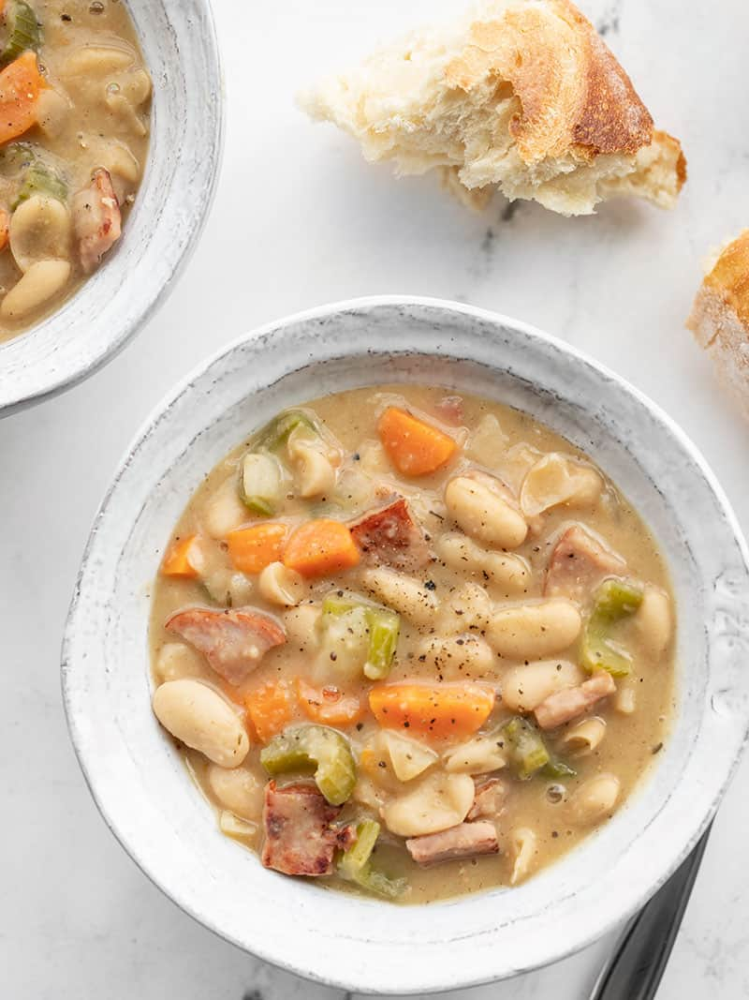

Ham Bean Soup
Why This Recipe?
Soup season is already on its way out, but I couldn’t resist one more warm and cozy pot of goodness.
For this super easy and deliciously chunky Ham and Bean Soup I took cue from my easy Rosemary Garlic White Bean Soup
and used a puréed can of beans to thicken the pot, combined that with some chunky and colorful vegetables
and a handful of diced ham to round out this meal in a bowl.
This is also a great use for your leftover holiday ham, so bookmark this recipe for Easter next month!
Ingredients
- 1 yellow onion ($0.32)
- 3 carrots ($0.30)
- 3 ribs celery ($0.35)
- 2 cloves garlic ($0.16)
- 1 lb. cooked ham ($3.75)
- 1 Tbsp cooking oil ($0.04)
- 3 15oz. cans cannellini beans ($1.47)
- 1/4 tsp dried thyme ($0.02)
- freshly cracked black pepper ($0.03)
- 2 cups chicken broth (or more as needed) ($0.26)
Steps
- Dice the onion, peel and slice the carrots, slice the celery, and mince the garlic.
- Dice the ham into bite-sized chunks. Add the ham and cooking oil to a large soup pot.
Sauté the ham for 3-5 minutes over medium heat, or until it achieves a decent amount of browning.
Remove the browned ham to a clean bowl.
- Add the onion, carrots, celery, and garlic to the pot in place of the ham.
Sauté the vegetables for about 5 minutes over medium heat, or until the onions have softened.
Allow the moisture released from the vegetables to help dissolve the browned bits of ham from the bottom of the soup pot as you stir.
- While the vegetables are sautéing, add one of the three cans of beans to a blender, with the liquid from the can, and purée until smooth.
Drain the remaining two cans of beans.
- Add all three cans of beans (one puréed and two drained) to the soup pot with the vegetables.
Also add 1/4 tsp dried thyme, some freshly cracked pepper (about 10 cranks of a pepper mill),
and 2 cups chicken broth. Stir to combine, then turn the heat up to medium-high and allow the soup to come to a boil.
- Once it reaches a boil, turn the heat down to medium and allow the soup to continue to boil for 15 minutes, stirring occasionally.
As the soup boils it will reduce and thicken.
If the soup becomes too thick, add more chicken broth or water to achieve your desired soup consistency.
- After the soup has boiled for 15 minutes and has thickened,
stir the cooked ham back into the soup. Give the soup a taste and adjust the salt or pepper to your liking.
I did not add any additional salt, but I did top each bowl with a little fresh pepper. Serve hot!